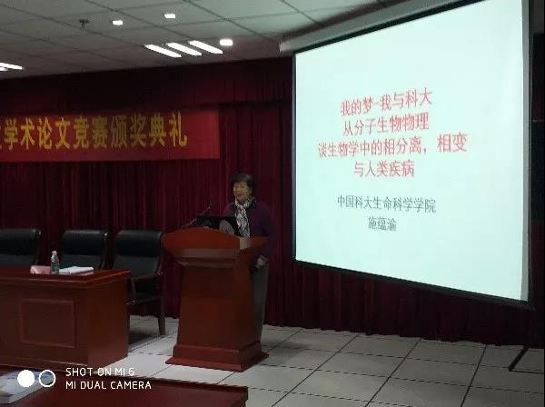
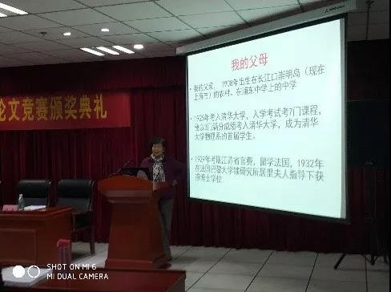
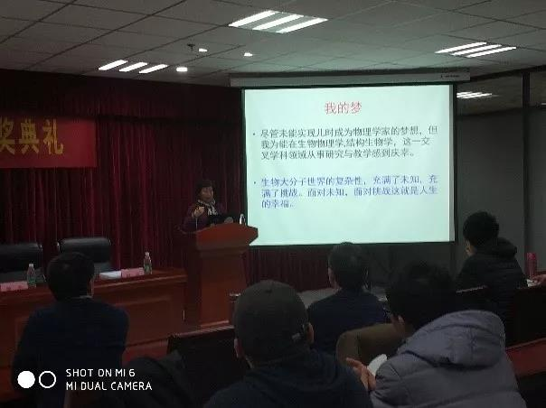
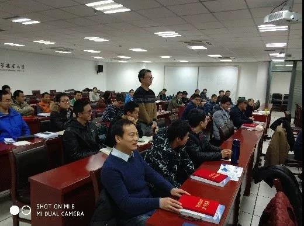

发布时间:2018-01-15 图文：外交部 七芯海棠 网络媒体部 XHXZ 编辑：网络媒体部 XHXZ
少年班讲坛暨本科生学术论文竞赛顺利举行
part 1
1月6日下午两点半，第二届本科生学术论文竞赛颁奖仪式暨少年班讲坛在东区图书馆四楼学术报告厅举行，施蕴渝院士、论文竞赛评委曾杰教授、校团委书记杨晓果、院长陈旸和少院党总支书记尹民出席本次颁奖典礼。
首先，杨晓果书记就颁奖典礼的开幕发表致辞，并宣传和鼓励同学们参加“挑战杯”全国大学生课外学术科技作品竞赛；然后由陈旸院长发言，他称赞了本次竞赛所倡导的规范性和同学们参与的积极性，又庆贺了少年班讲坛的举办，鼓励少年班学院的学子们珍惜当下，努力进取，成长为未来相关学科领域的领军人才。接着开始了隆重的颁奖仪式，曾杰教授为获奖同学颁发三等奖证书，尹民书记和杨晓果书记为获奖同学颁发二等奖证书，最后施院士与陈旸院长为获奖同学颁发一等奖证书；为了感谢各位评委的辛苦付出，陈旸院长和杨晓果书记还为施院士和曾杰教授颁发了荣誉证书。
随后少年班讲坛正式开始，本次少年班讲坛由施蕴渝院士主讲，她以“我的梦-我与科大”以及“从分子生物物理谈生物学中的相分离，相变与人类疾病”为题讲述了自己早年的人生经历以及生物科学的前沿。

part 2
首先院士介绍了自己的父母，并简要介绍了父亲的人生经历，以此表明父亲对自己的重大影响。紧接着院士又一一回忆了自己的小学和中学同学以及在中小学时自己成为物理学家的梦想。

part 3
在此之后，施院士考入中国科技大学，并进入了生物物理系。在讲坛中，院士讲道：“一所名校，不仅有大楼，更要有大师。在中国科大的讲台上，曾留下众多著名学者的身影。”然后院士回忆了几个著名的科学家在科大讲课任职的情景以及陈毅先生对科大寄予的厚望。此外，院士提到了中国载人航天工程与科大学子的密切联系，并深情回忆了大学同学石秀凡。
继而，施院士开始讲述在科大工作的48年，包括四清和文革，还有70年科大下迁，点明了当时科大教学和工作环境的恶劣，凸显出了教员们的艰苦奋斗。另外，院士还提到了自己在罗马和荷兰的经历。她总结道：“我们在科大常谈科大精神。什么是科大精神，那就是科大人的一种责任心，一种事业心，一种使命感，以及科大人对科学的热爱，对科大的热爱。”
谈到中学成为物理学家的梦想，施院士表示：虽然未能实现，但对能在生物物理学和结构生物学这一交叉学科领域从事研究与教学感到庆幸。并勉励同学们：“遇到困难，遇到挫折，一定要与命运抗争，要努力奋斗，要努力要坚持，不要轻易放弃。”

part 4
最后，施院士简要介绍了自己所从事的生物物理学和结构生物学的前沿知识，给同学们展示了生物世界的奇妙和伟大，还介绍了其他科学家的艰苦的研究历程。在结尾时，施院士提出了自己的几个愿望，并希望同学们努力奋斗，永不言弃。


part 5
施院士的演讲结束后，到了自由提问的环节。在这个环节中，有好几名同学提出了有新意有见解的问题，施院士一一为他们做出了解答。
少年班讲坛在下午五点正式结束，结束后同学们簇拥着施院士，向她咨询生物物理学方面的各种问题，施院士则慈祥耐心地做出了回应。